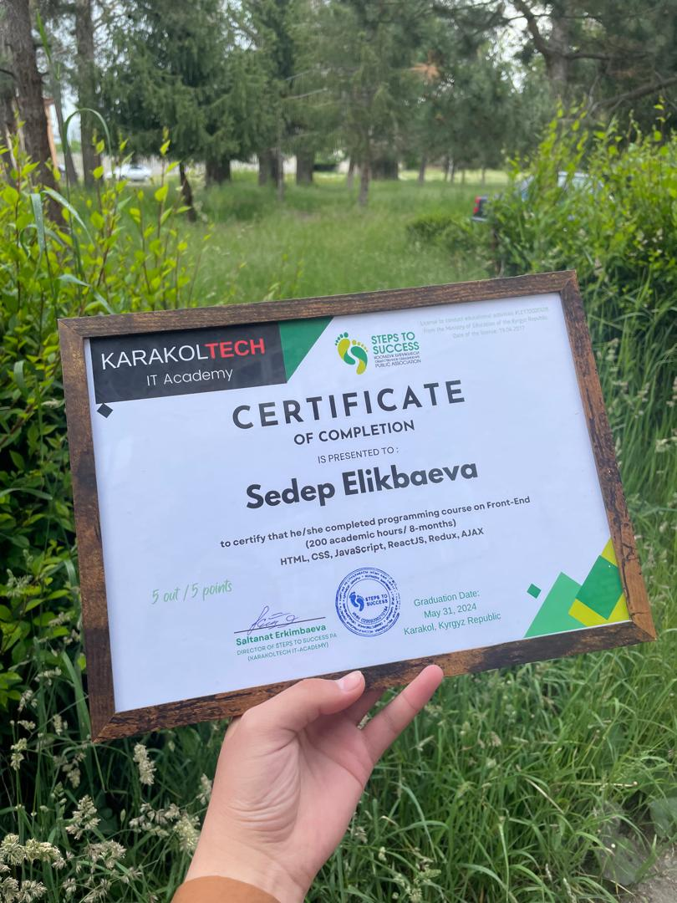
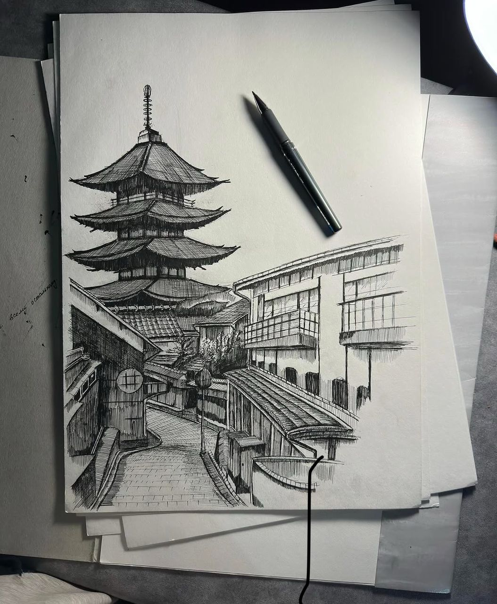
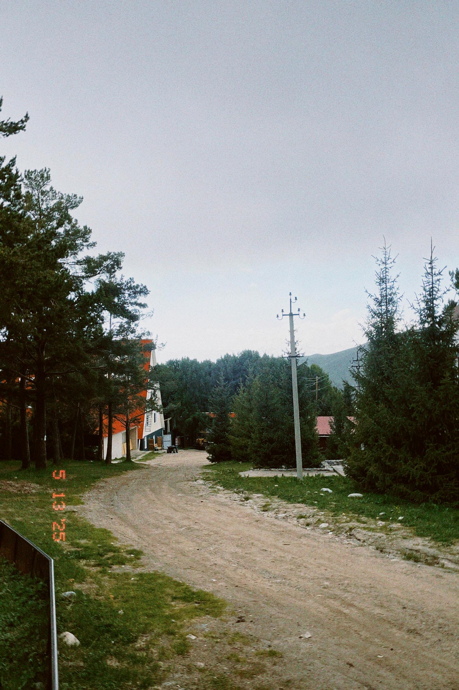
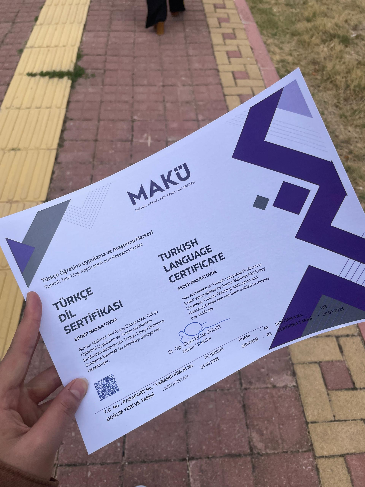

Üniversiteden önce aldığım Front-End Geliştirme eğitimi ve başarı sertifikam, yazılım dünyasındaki adımlarımı hızlandırıyor ve projelerime temel oluşturuyor.

Boş zamanlarımda karakalem gerçekçi portre çizimleri yapıyorum. Kağıt üzerinde detaylara odaklanmak, mühendislikte en çok ihtiyaç duyduğum sabrı, dikkati ve analitik bakış açısını besliyor.

Fotoğrafçılık benim için büyük bir tutku. Özellikle 90'ların film estetiğini ve nostaljik Polaroid kareleri seviyorum. Uzun yürüyüşler yapmak ve yeni yerler keşfetmek, bana en güzel sinematik anları yakalama şansı sunuyor.

Yeni diller öğrenmeyi ve farklı kültürleri keşfetmeyi çok seviyorum. Özellikle yabancı diziler izleyerek dil becerilerimi geliştirmek, hem vizyonumu genişleten hem de günlük hayatın stresinden uzaklaşmamı sağlayan en keyifli aktivitelerimden biri.